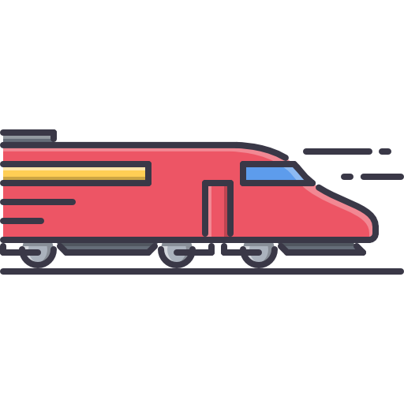
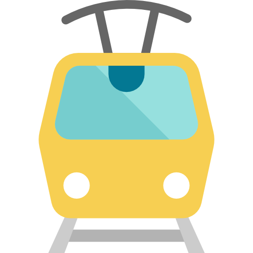

| Train | Métro | Tramway | Bus | Tisséo |
|---|---|---|---|---|
|
 Toulouse a deux gares de train, vous pourrez retrouver toutes les informations sur leur site dédié. Cliquez sur l'image
pour plus d'information |
Cliquez sur l'image
pour plus d'information |

Toulouse dispose d'un tramway, Cliquez sur l'image
pour plus d'information |
Cliquez sur l'image
pour plus d'information |
Pour retrouver les offres d'abonnements cliquer sur l'image.Le plus rentable étant de prendre les tickets par 10 (4€ pour les étudiants) Cliquez sur l'image
pour plus d'information |